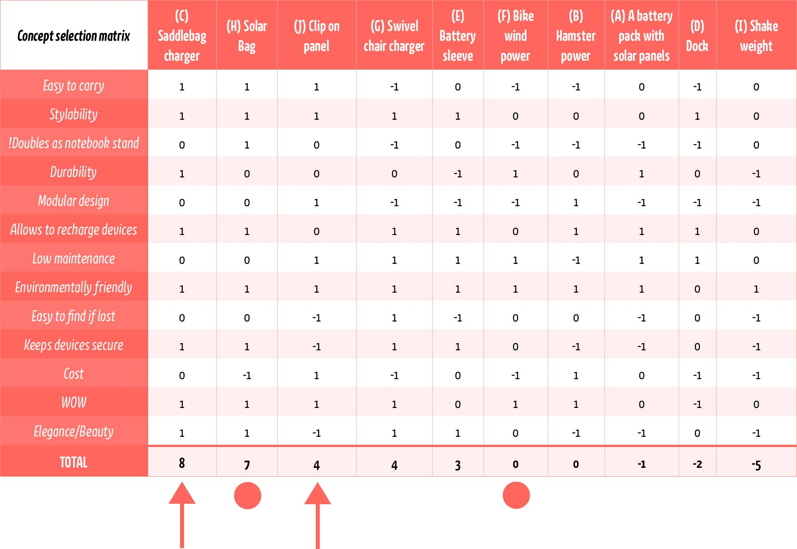
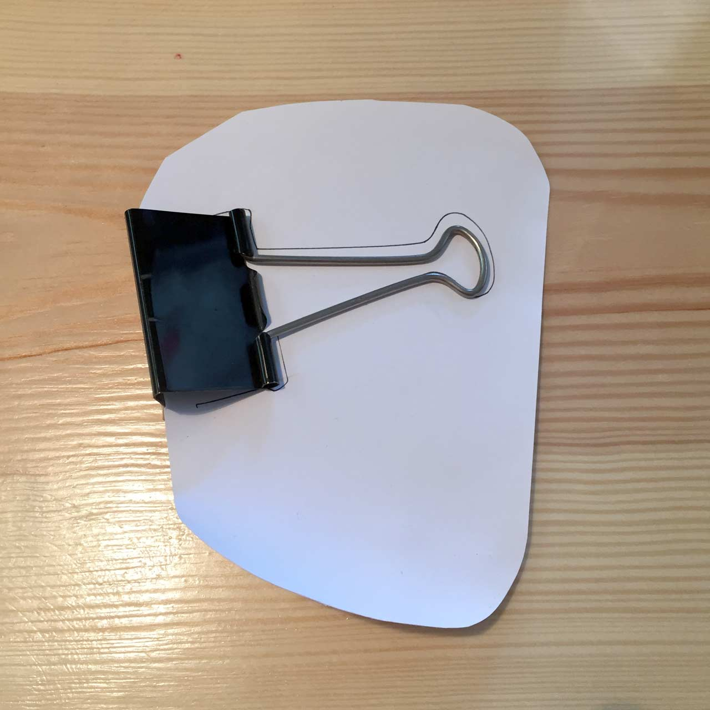
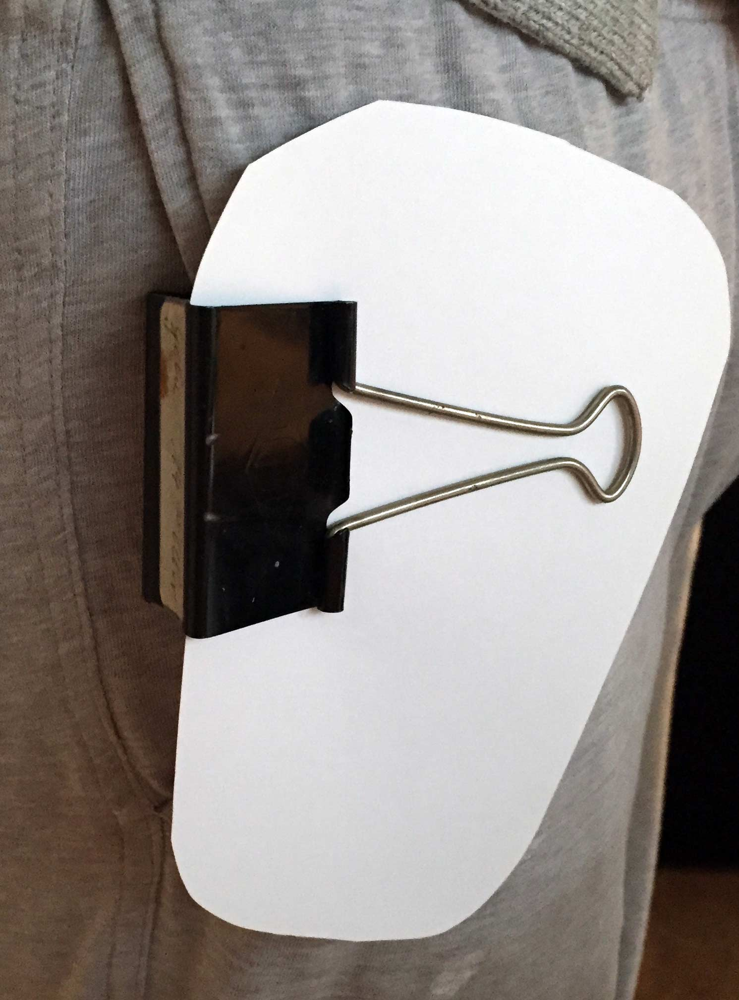
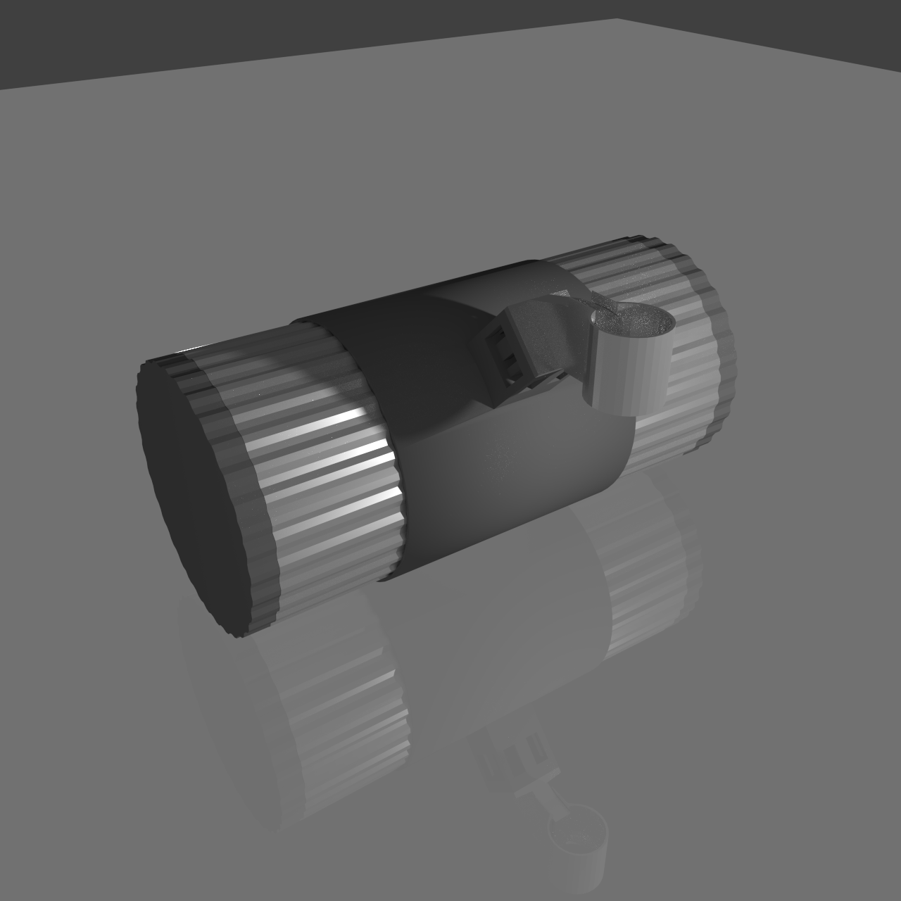
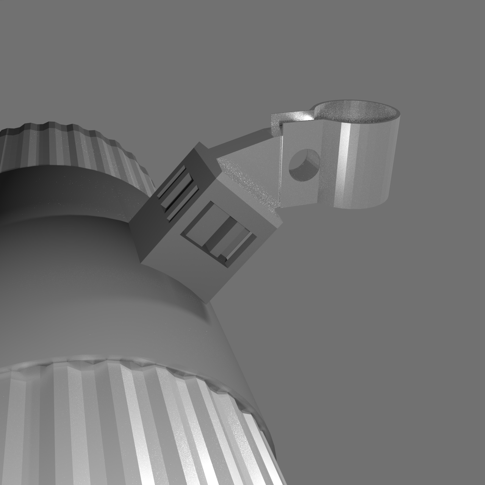

Wenzel Massag
It's our vision of the future that guides our decisions towards itself.
Our present is just the result.
It's our vision of the future that guides our decisions towards itself.
Our present is just the result.

The letters A-J were used to identify concepts in week 3.
The arrows indicate the concepts for wich I will build prototypes this week. The circles indicate what I would like to build prototypes for but won't until the end of the course. The solar bag seems like a great solution for city life, the wind power on the bike combined with the saddle bag might be nice to have access to your phone without holding it in your hand while riding a bike - but it doesn't sufficiently address my gap. The solar bag would, I know without a prototype, its a bag, we all know it works.
I decided to go with two very different kinds of prototype, one physical and one digital. For the clip on solar panel I needed to know how well it could be used clipped into a pocket walking, running, sitting and stooping down to pick things up. All things might do on your daily commute, at home and in the office.


Wearing this prototype I found that it wasn't uncomfortable or got in the way, but jackets, sweaters etc. fall in front of the solar panel, making this solution utterly useless. Additionally bendable solar panels wouldn't survive tight folds if you sat down and pinched it and you're likely to damage it is every day situations.
There are already simple saddle bags available, so i didn't need to test if the concept of a bad beneath the saddle had merit in general. Luckily I have some experience with 3D modeling and was able to create what I had in mind.

Inside the bag is the electronics to charge USB devices. Trial builds fit into a small matchbox, so that won't be a problem. The metal cylinder has two rubber ends that screw off and ridges that only fit into the rubber holder the right way to ensure it is connected. The connection of mass (negative electric pole) is achieved through the frame of the bike itself, the only wire necessary can easily be attached and changes depending on the bike.
The metal cylinder is hollow and padded with thick foam, inside is a USB connector for any device you might want to charge. The cylinder can be removed from the rubber holder that is attached to the bike, optionally it would fit a battery that could be used to charge devices without the bike. Of course the combination of a metal cylinder and rubber top and bottom is water proof and shock proof if you drop it.

The rubber holder is one peace with the shock-absorber, the weird looking thing. Attached to that is the aluminium mechanism to fasten it to the pole the saddle is mounted on. As a bonus, if you know how Blender works, here is the 3D model of the bag.
About the shock-absorber. — On a bike, everything directly attached to the frame get shaken around violently. The Rubber is at a 45° angle and can flex sideways in all directions. This way, when the bike pulls downwards, the bag is lifted and slowed down (relative to the motion of the bike), when the bike pulls upwards, the bag is allowed to lag behind but doing so accelerates is slightly. Considering that bikes change speed when you drive over a pothole for example this actively makes the bump weaker and thus reduces the impact on the device in the container without consuming energy.